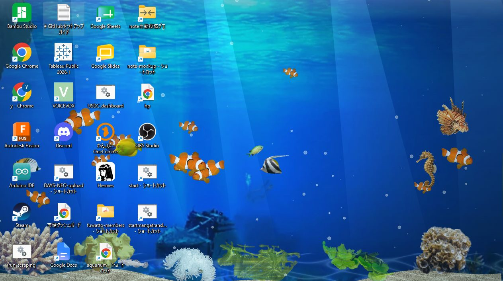

1票
ディスプレイ水槽
自由に海水魚を追加できるディスプレイ壁紙。物理シミュレーションで自然な泳ぎを再現
AI講評
Claude Code
実写の魚や海草をブラウザ上に自由に配置でき、ドラッグで動かしたり、餌に集まって食べる様子を眺めたりできる点が魅力です。作って終わりではなく、Lively Wallpaper 向けに書き出してデスクトップの壁紙として使えるところまで仕上げているのも良いと思います。伸ばせる点は、体験リンクがポートフォリオのトップに向いていることです。作品ページか水槽そのものへ直接飛べると、来場者がすぐ遊べます。
ChatGPT
海水魚を自由に追加し、自分だけの水槽を育てながら壁紙として眺められる発想が魅力的です。物理シミュレーションによる自然な泳ぎは、魚を増やす操作そのものを鑑賞体験につなげています。今後は、魚の種類や数が増えた際の見やすさ、動作の安定性を調整できる設定が加わると、より幅広い環境で長く楽しめる作品になりそうです。
